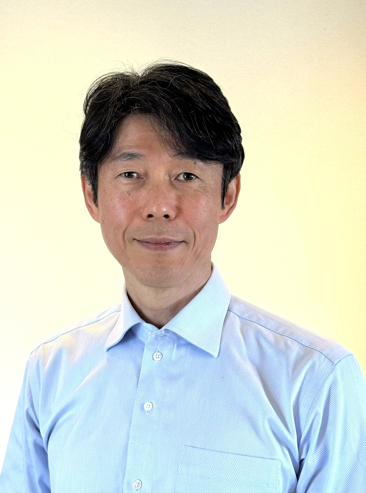
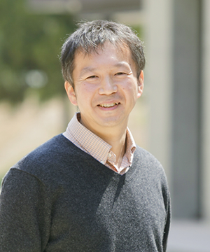
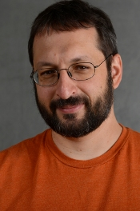

| Home | Registration | Program |
Recent advances in computer vision have substantially improved our ability to understand humans from images and videos, including human pose estimation, motion analysis, action recognition, interaction understanding, and scene understanding. At the same time, human-centric vision is increasingly expected not only to recognize present states, but also to predict future behaviors and support embodied systems that act in human environments. This shift connects human pose, shape, and motion understanding, human motion generation, human-object and human-robot interaction, and robot motion learning under a common question: how can visual systems understand, predict, and generate behavior in dynamic human-centered scenes?
This workshop brings together researchers working on human-centric visual understanding, future prediction, and embodied motion intelligence. The scope is organized around the following themes.
| Theme | Representative topics |
|---|---|
| Human understanding | Human pose estimation; human shape and mesh reconstruction; human motion understanding and forecasting; human action recognition and prediction; scene-aware human behavior analysis |
| Future prediction | Human trajectory prediction; crowd behavior analysis; social interaction modeling; multimodal and uncertainty-aware forecasting |
| Interaction modeling | Human-object interaction; human-robot interaction; socially aware visual reasoning |
| Embodied intelligence | Robot motion representation, learning, and generation connected to human understanding, prediction, or interaction |
| Foundation models | Vision-language models and foundation models for human-centric understanding, motion generation, future prediction, and embodied motion learning |
The workshop will provide a unified perspective on how visual perception can progress from understanding present human states toward predicting future human behaviors and generating actions for embodied agents and robots. By connecting human motion/action understanding and prediction with robot motion representation, learning, and generation, the workshop aims to encourage interactions among researchers from human-centric vision, motion forecasting, robotics, and embodied AI.
Recent CVPR, ICCV, ECCV, and ACCV workshops have addressed related topics such as human pose estimation, human-object interaction, and embodied AI. These workshops typically focus on individual subareas. This workshop instead provides a unified forum connecting human pose, shape, and motion understanding, human motion generation, trajectory prediction, social interaction modeling, robot motion learning, and embodied intelligence.
This integrated perspective is timely, as foundation models and multimodal reasoning systems increasingly connect perception, prediction, and decision making.
We invite submissions on human-centric visual understanding, future prediction, interaction modeling, foundation models, and embodied motion intelligence, including the representative topics listed above.
Proceedings
Accepted papers will be published in the ACCV 2026 workshop proceedings.
Workshop duration
Full day.
Submission information
Detailed submission instructions will be announced on this website.
Important dates
| Milestone | Tentative timing |
|---|---|
| Paper submission deadline | September 25, 2026 |
| Notification | October 9, 2026 |
| Camera-ready submission | October 11, 2026 |
|
 Yoichi Sato The University of Tokyo (Japan) |
Kent Fujiwara LINE Yahoo (Japan) |
 Taku Komura
The University of Hong Kong (Hong Kong)
Taku Komura
The University of Hong Kong (Hong Kong)
|
| Gim Hee Lee National University of Singapore (Singapore) | Angela Yao National University of Singapore (Singapore) | Matthew Walter Toyota Technological Institute at Chicago (USA) |
The invited speaker lineup is designed to give the workshop technical depth and broad cross-community appeal. Yoichi Sato is a leading researcher in human-centric computer vision, with substantial contributions to egocentric vision, human attention, and behavior understanding; his recent involvement in large-scale egocentric activity resources such as Ego4D and Ego-Exo4D makes him an excellent speaker for connecting human understanding with real-world human activity analysis. Kent Fujiwara brings strong industrial research expertise in full-body human motion generation and motion-language modeling, including recent work on 3D human motion-language models with motion patches. Taku Komura is internationally recognized for character animation, data-driven human motion synthesis, physically based character animation, crowd simulation, and robotics, making him an ideal speaker for linking human motion representation with generative motion models. Gim Hee Lee will broaden the workshop’s scope to human reconstruction and robotics, with strong expertise in 3D vision, human reconstruction, and robot perception. Angela Yao will further strengthen the program on human pose and mesh reconstruction, bringing expertise in human-centric visual understanding and 3D human analysis. Matthew Walter will connect the workshop to embodied robot motion learning through his long-standing research on robot perception, planning, and human-robot collaboration.
Together, these speakers provide a well-balanced program spanning human behavior, motion generation, character animation, human reconstruction, robotics, and embodied learning. Their complementary perspectives from academia and industry across Japan, Hong Kong, Singapore, and North America directly support the workshop’s goal of connecting human pose, shape, and motion understanding, human motion generation, prediction, reconstruction, and embodied intelligence.
| Hiromu Taketsugu Toyota Technological Institute (Japan) | Shohei Nobuhara Kyoto Institute of Technology (Japan) |
 Hiroaki Kawashima University of Hyogo (Japan) |
| Igor Vasiljevic Toyota Research Institute (USA) | Federica Bogo Meta Reality Labs Research (Switzerland) |
 Greg Shakhnarovich Toyota Technological Institute at Chicago (USA) |
| Norimichi Ukita Toyota Technological Institute (Japan) |